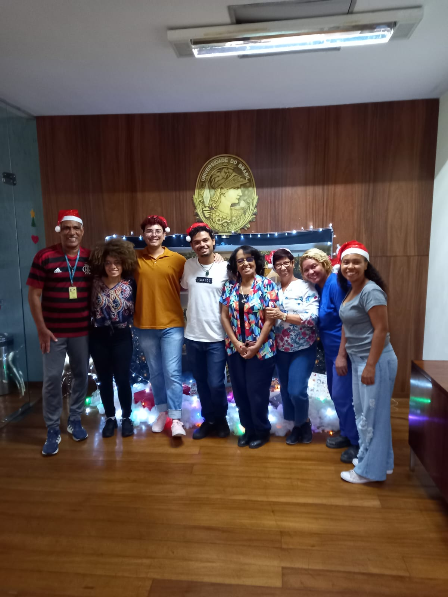
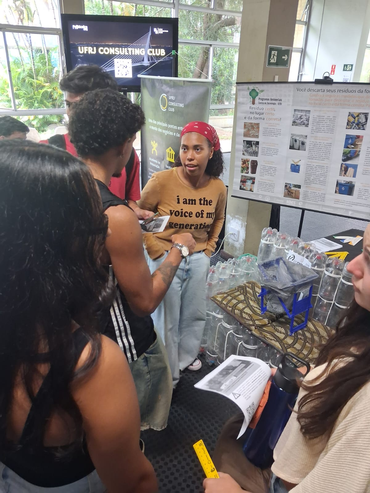
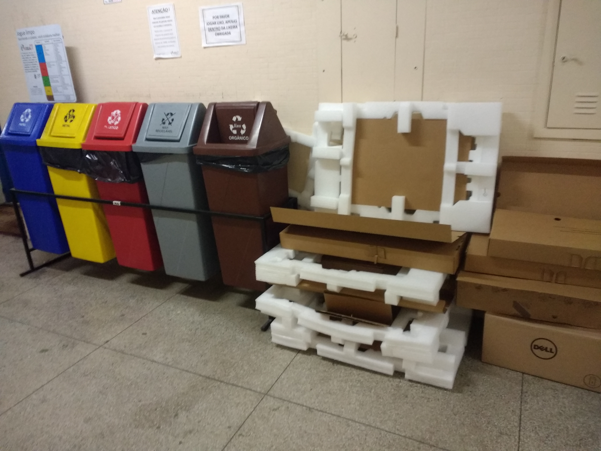
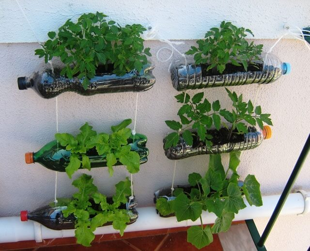
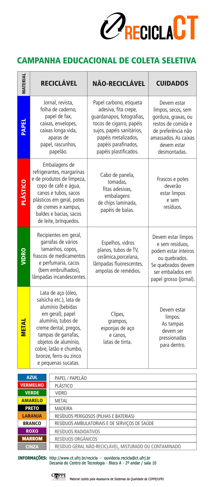

Reciclagem
Coleta seletiva, logística no campus e orientação para separação correta de resíduos no dia a dia do CT.
ProgramasAmbientaisCT
Projeto de Extensão · UFRJ · Centro de Tecnologia
Transformando resíduos em consciência sustentável.
O ProgramasAmbientaisCT integra estudantes, docentes e a comunidade do CT em ações de reciclagem, reaproveitamento e educação ambiental.
Três frentes que guiam o ProgramasAmbientaisCT na Universidade Federal do Rio de Janeiro.
Coleta seletiva, logística no campus e orientação para separação correta de resíduos no dia a dia do CT.
Oficinas, palestras e campanhas que traduzem dados e legislação em práticas simples e coletivas.
Reaproveitamento de materiais, redução de desperdício e visão de ciclo fechado alinhada à inovação no CT.
Um campus mais limpo, menos resíduos enviados a aterro, mais senso de comunidade e oportunidades reais de aplicar conhecimento técnico em problemas ambientais reais — do laboratório à praça de alimentação.
Quer conhecer mais?

O ReciclaCT nasceu como um projeto de extensão universitária da UFRJ com o objetivo de incentivar práticas sustentáveis dentro do Centro de Tecnologia. O projeto busca integrar estudantes, professores e a comunidade acadêmica em ações voltadas à reciclagem, reaproveitamento de materiais e conscientização ambiental.
Atuamos na interface entre tecnologia e meio ambiente, estimulando hábitos conscientes e fortalecendo uma cultura de responsabilidade ecológica no campus.
Quer conhecer mais?Entenda por que o CT da UFRJ é um território estratégico para inovar em sustentabilidade.
É um sistema regenerativo em que o valor dos produtos, materiais e recursos se mantém no ciclo o máximo possível. Em vez do modelo linear “extrair — produzir — descartar”, buscamos redesenhar fluxos para reutilizar, reparar e reciclar.
Entenda mais
Campi concentram fluxo intenso de resíduos e consumo. Integrar educação, infraestrutura e cultura permite que a UFRJ seja laboratório vivo de políticas sustentáveis replicáveis na sociedade.
Quer conhecer mais?
Diagnóstico, coleta seletiva e hábitos conscientes diminuem o volume enviado para aterros.
Quer conhecer mais? 02Materiais ganham nova vida em oficinas, prototipagem e projetos interdisciplinares.
Quer conhecer mais? 03Menos extração de matéria-prima, menor pegada de carbono e campus mais saudável.
Quer conhecer mais?Iniciativas que materializam reciclagem, economia circular e cultura sustentável na UFRJ.

Organização de pontos estratégicos e orientação sobre separação correta de resíduos no CT.

Atividades práticas de reaproveitamento, compostagem e conscientização lúdica.
Debates com especialistas sobre resíduos, legislação ambiental e inovação verde.

Comunicação visual e digital para ampliar alcance e engajar toda a comunidade.
Feiras, mutirões e encontros que celebram práticas ecológicas no campus.
Articulação com centros e coletivos para alinhar esforços e multiplicar resultados.
Números ilustrativos de impacto — ajuste conforme dados reais do ReciclaCT.
Quiz, jogos e carrosséis educativos dos programas ambientais do CT.
Carrossel dos coletores, ciclo dos resíduos, calculadora de impacto e jogo do descarte correto.
Quer conhecer mais?Caça ao desperdício, simulador de economia de energia e quiz sobre uso racional de água e luz.
Quer conhecer mais?Painel ambiental, mitos e verdades e atividades de biodiversidade no campus.
Quer conhecer mais?Simuladores e quizzes de resíduos eletrônicos e perigosos, com feedback visual imediato.
Quer conhecer mais?Acompanhe as novidades dos Programas Ambientais do CT.
Profissionais e estudantes que impulsionam o ReciclaCT no CT/UFRJ.

Coordenação
Articula parcerias institucionais e acompanha indicadores do projeto.
Extensionista
Elabora apresentações para educação ambiental e faz parte da gestão do projeto.

Extensionista
Auxilia na parte informática do projeto, Administração do site.
Extensionista
Cuida das redes sociais e divulgação das ações.
Quer apoiar, voluntariar-se ou levar o ReciclaCT ao seu núcleo? Envie uma mensagem.
O formulário está indisponível nesta prévia. Entre em contato pelo e-mail ambiental@ct.ufrj.br.